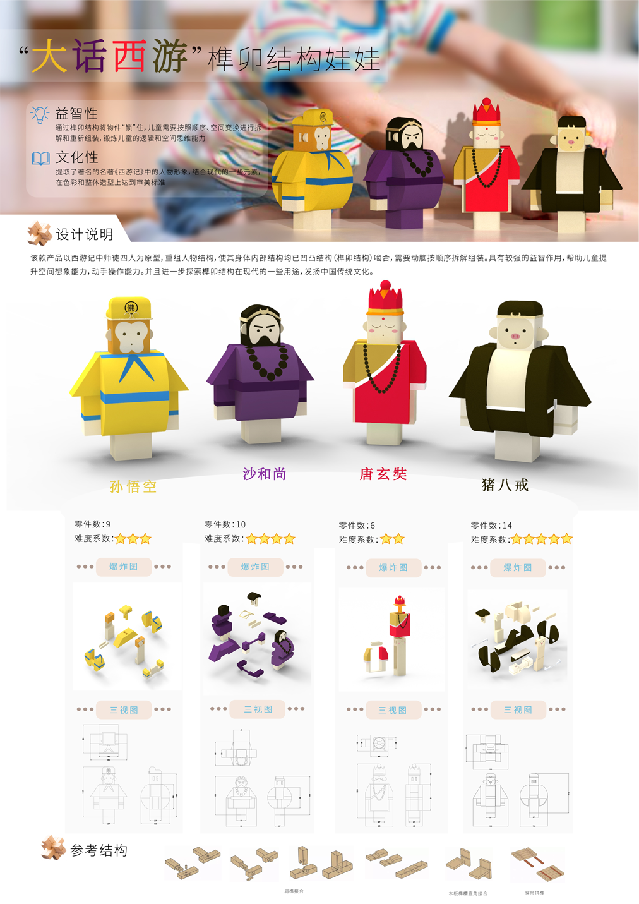

大话西游 | Mortise and tenon structure doll
The tenon-and-mortise structure is widely used in ancient Chinese architecture. This design is based on the four masters and apprentices in "Journey to the West". The tenon-and-mortise structure is used in the character image, which requires brains to disassemble and assemble in sequence.
It has a strong educational function and helps children improve their spatial imagination and hands-on operation ability. And further explore some modern uses of the tenon-and-mortise structure to carry forward Chinese traditional culture.
Use demonstration & live demonstration
Designer: Ketong Xu Instructor: Dr. Zhi Sun